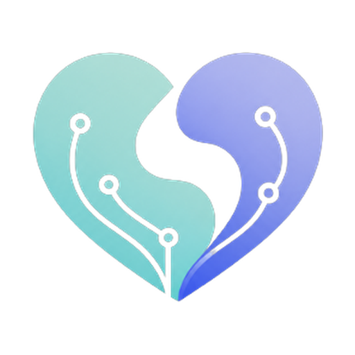

<style>
.slide{background:#1E9E9E;color:#fff}
.slide .top .brand,.slide .top .brand .we,.slide .top .brand .self{color:#fff}.slide .top .brand img{background:#fff;border-radius:12px;padding:4px}
.stamp{position:absolute;right:60px;top:52px;background:#F09B7C;color:#1E2B5C;font-weight:900;font-size:26px;letter-spacing:.12em;padding:12px 22px;border-radius:14px;transform:rotate(4deg);box-shadow:0 6px 0 #A64A30}
.emo{font-family:'Noto Color Emoji',sans-serif;font-style:normal}
.nob{font-weight:800;font-size:40px;color:rgba(255,255,255,.75)}
.l1{font-weight:900;font-size:56px;line-height:1.08;letter-spacing:-.02em}
.panic{background:#fff;color:#1E2B5C;border-radius:30px;padding:28px 34px;display:flex;gap:24px;align-items:center;border:6px solid #1E2B5C}
.panic .e{font-size:120px;line-height:1}
.panic p{font-weight:900;font-size:40px;line-height:1.16}
.panic p b{color:#D9592A}
.ins{background:#1E2B5C;border-radius:30px;padding:24px 32px;display:flex;justify-content:space-between;align-items:center}
.ins small{display:block;font-weight:800;font-size:22px;letter-spacing:.12em;color:#AAB3DD}
.ins b{font-weight:900;font-size:64px;line-height:1.05}
.ins span{font-weight:800;font-size:28px;color:#FFB48C;text-align:right}
.punch{font-weight:900;font-size:46px;line-height:1.12}
.sci{font-weight:700;font-size:29px;line-height:1.36}
.sci b{color:#FFB48C}
.ask{font-weight:900;font-size:34px;color:#FFB48C}
.srcl{font-family:Literata,serif;font-size:23px;color:rgba(255,255,255,.85)}
</style>
<section class="slide" id="s1"><span class="stamp">SCIENZA DA RIDERE</span>
  <div class="top"><div class="brand"><span><span class="we">We</span><span class="self">Self</span></span></div></div>
  <div class="stack" style="margin-top:50px;gap:32px">
    <p class="nob">Nessuno:</p>
    <p class="l1">Noi, dopo un errore di battitura in un post:</p>
    <div class="panic"><span class="e emo">😱</span><p>«L'hanno visto <b>TUTTI</b>. Chiudiamo l'account. Cambiamo nome. Cambiamo città.»</p></div>
    <div class="ins"><div><small>VISUALIZZAZIONI <span class="emo">👀</span></small><b>41</b></div><span>di cui 3 erano<br>la mamma <span class="emo">👋</span></span></div>
    <p class="punch">Spoiler: se ne sono accorti in pochi. Anche perché <span style="color:#FFB48C">siamo in pochi</span>. <span class="emo">🥲</span></p>
    <p class="sci">Si chiama <b>effetto riflettore</b>: in uno studio, chi indossava una maglietta imbarazzante pensava che l'avesse notata il <b>46%</b> dei presenti. L'ha notata il <b>23%</b>.</p>
    <p class="ask">Aiutaci a smentire la seconda parte: condividi. <span class="emo">🙏</span></p>
  </div>
  <p class="srcl" style="margin-top:auto">Fonte: Gilovich, Medvec &amp; Savitsky, 2000 · Journal of Personality and Social Psychology</p>
</section></body></html>
